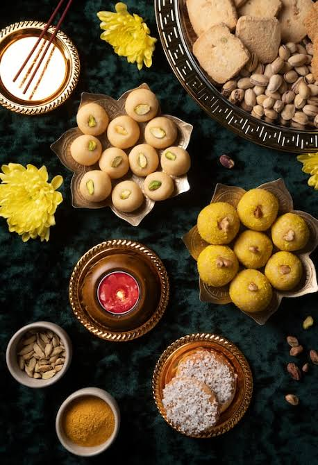

The Savory Bistro is on a mission to inspire food enthusiasts to fall in love with fine dining. Authentic cooking helps develop rich flavor profiles and unmatched sensory experiences. Masterful culinary presentation is the future. It already constitutes the heartbeat of hospitality, culture, community engagement, and timeless family memories. By prioritizing farm-fresh seasonal selections, our culinary experts stay ahead of standard menus to bring elite artisan pairings directly to your table. We aim to be the creators of future tastes.
In today's fast world, mindful eating has become an essential luxury.
Exceptional dining helps customers interact with traditional techniques better. Studies also show
that it aids in holistic rejuvenation of well-being, improving mood patterns as well as baseline
cognitive focus.
Holistic rejuvenation means evolving dynamic plating, sensory pairing,
and social atmospheres to prepare guests better for unforgettable milestones. Gathering for an
artisanal menu not only involves personal comfort but also focuses deeply on genuine community
connection.